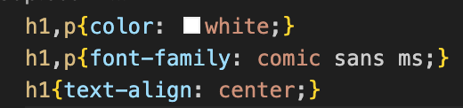
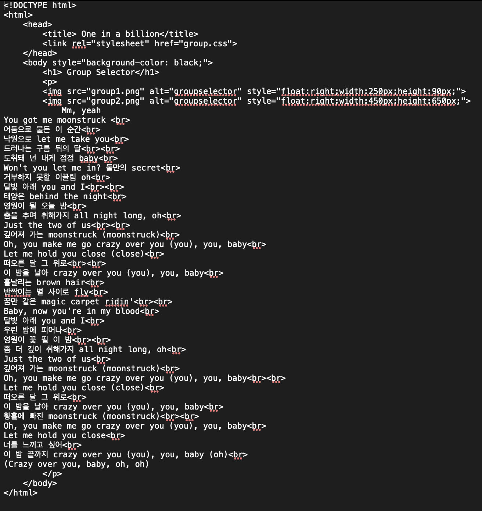

Mm, yeah
You got me moonstruck
어둠으로 물든 이 순간
낙원으로 let me take you
드러나는 구름 뒤의 달
도취돼 넌 내게 점점 baby
Won't you let me in? 둘만의 secret
거부하지 못할 이끌림 oh
달빛 아래 you and I
태양은 behind the night
영원이 될 오늘 밤
춤을 추며 취해가지 all night long, oh
Just the two of us
깊어져 가는 moonstruck (moonstruck)
Oh, you make me go crazy over you (you), you, baby
Let me hold you close (close)
떠오른 달 그 위로
이 밤을 날아 crazy over you (you), you, baby
흩날리는 brown hair
반짝이는 별 사이로 fly
꿈만 같은 magic carpet ridin'
Baby, now you're in my blood
달빛 아래 you and I
우린 밤에 피어나
영원이 꽃 필 이 밤
좀 더 깊이 취해가지 all night long, oh
Just the two of us
깊어져 가는 moonstruck (moonstruck)
Oh, you make me go crazy over you (you), you, baby
Let me hold you close (close)
떠오른 달 그 위로
이 밤을 날아 crazy over you (you), you, baby
황홀에 빠진 moonstruck (moonstruck)
Oh, you make me go crazy over you (you), you, baby
Let me hold you close
너를 느끼고 싶어
이 밤 끝까지 crazy over you (you), you, baby (oh)
(Crazy over you, baby, oh, oh)